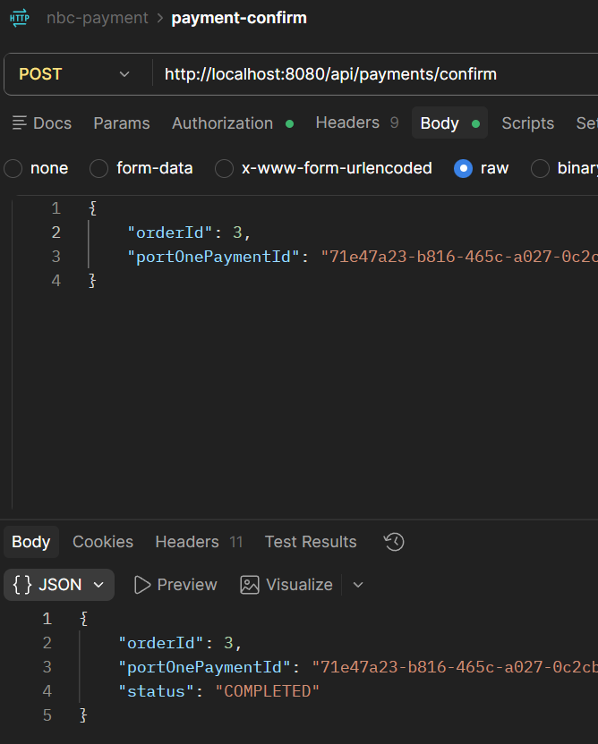

CHECKOUT SYSTEM
nbc-checkout-system
26.05–26.06 · 3주 · 4인 · 주문·장바구니·결제 커머스 백엔드
Java · Spring Boot · JPA · MySQL · PortOne API

외부 결제 승인 API 요청과 응답 확인
담당 범위와 결제 흐름
결제와 포인트 도메인을 담당했습니다. 외부 결제 정보를 내부 주문과 대조하고, 외부 조회는 DB 트랜잭션 밖에서 수행했습니다. 결제 실패 시 상태 변경과 재고 복구는 한 트랜잭션으로 처리했습니다.
외부 결제 조회→주문 정보 대조→처리 대기 확인→결과 반영
문제와 선택
외부 결제 조회와 DB 트랜잭션 분리
- 요구사항
- 외부 결제 결과를 확인한 뒤 내부 결제 상태와 재고에 반영
- 트랜잭션 범위
- 외부 응답을 기다리는 구간은 제외하고 함께 반영할 DB 변경을 하나로 묶음
- 중복 위험
- 재요청이나 웹훅으로 같은 실패 결과가 들어오면 재고 복구가 반복될 수 있음
- 결정
- 외부 조회 후 별도 서비스의 트랜잭션에서 결과를 반영하고 실패 처리는 PENDING 상태로 제한
선택 과정DB 조회와 외부 API 호출을 하나의 트랜잭션으로 묶으면 외부 응답을 기다리는 동안 DB 연결을 점유할 수 있습니다. 응답이 느리고 동시 요청이 늘면 다른 요청이 DB 연결을 기다릴 수 있어, 외부 조회는 트랜잭션 밖에서 하고 결과를 반영하는 DB 작업만 별도 트랜잭션으로 묶었습니다.
결제 실패 시 결제 상태 변경과 재고 복구도 하나의 트랜잭션으로 묶어 두 작업이 함께 반영되거나 함께 롤백되도록 했습니다.
구현과 결과
IMPLEMENTATION 01- DB 트랜잭션 밖에서 외부 결제 정보를 조회했습니다.
- 결제 ID가 다르면 오류를 반환했습니다.
- 결제 완료 상태와 주문 금액이 모두 일치하면 성공 처리하고, 그 외에는 실패 처리로 분기했습니다.
IMPLEMENTATION 02- PENDING 상태에서만 실패 처리와 재고 복구를 실행했습니다.
- 두 작업은 하나의 트랜잭션으로 묶었습니다.
- 동시 변경은 JPA 낙관적 락(@Version)으로 감지하도록 했습니다.
VERIFICATION- 간단한 HTML 화면에서 결제를 진행하고 Postman으로 결제 성공·실패 API 응답을 확인했습니다.
- MySQL에서도 저장된 값을 확인했습니다.
TRADE-OFF- 외부 API 응답 대기를 트랜잭션에서 제외해 DB 연결을 오래 점유할 위험을 줄였습니다.
- 외부 조회와 DB 반영이 나뉘므로 조회 성공 후 DB 반영에 실패한 경우의 재처리 흐름을 별도로 관리해야 합니다.
결과외부 결제 결과에 따라 내부 결제 상태를 반영하고 실패한 주문의 재고를 복구하는 흐름을 구현했습니다. Postman에서 결제 성공·실패 API 응답을 확인했고 MySQL에서도 저장된 값을 확인했습니다.
함께 반영돼야 하는 데이터 변경을 기준으로 트랜잭션 범위를 정해야 한다는 점을 배웠습니다.
저장소 보기 →